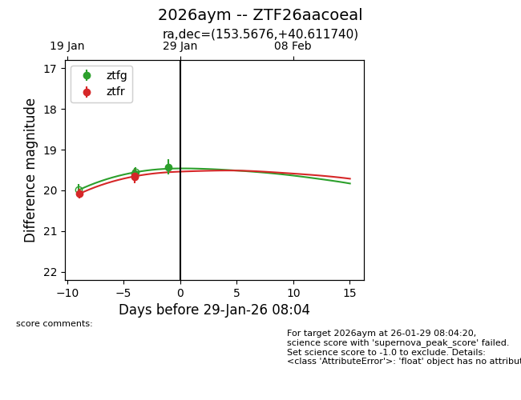
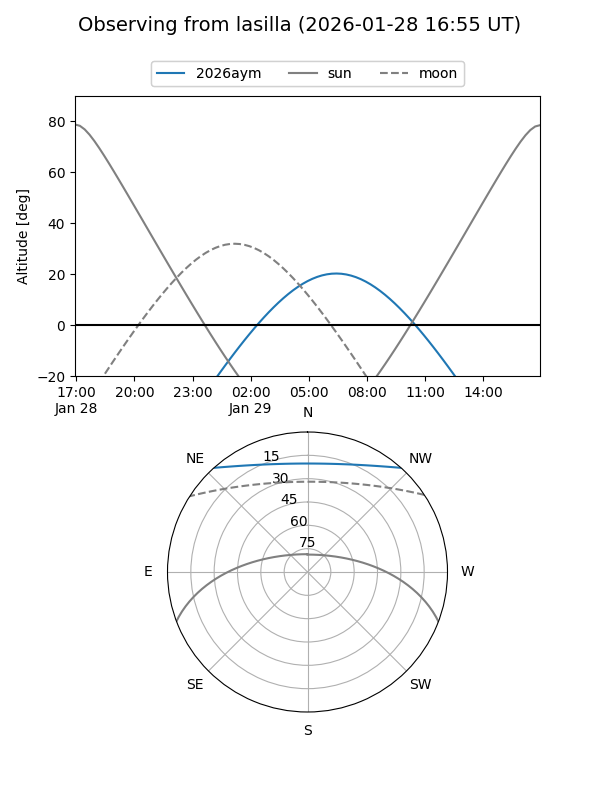
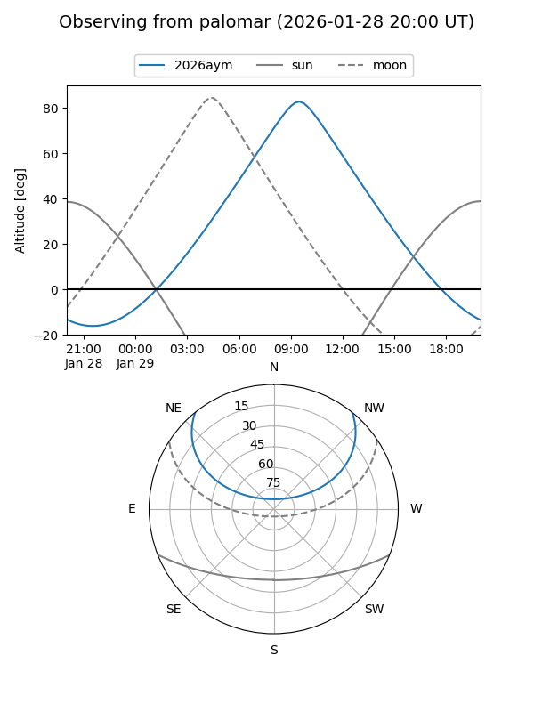
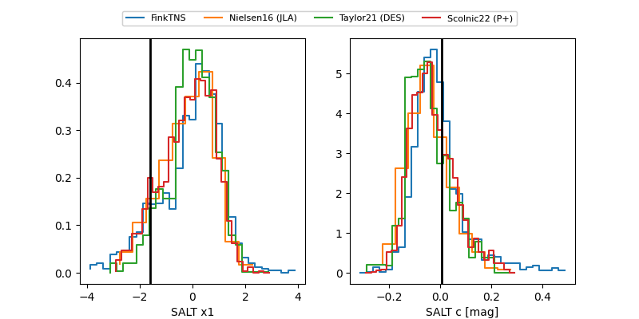

2026aym
Target 2026aym at 2026-01-29 08:06
Aliases and brokers:
FINK: link
Lasair: link
ALeRCE: link
TNS: link
YSE: link
alt names
ZTF26aacoeal (ztf,fink_ztf)
2026aym (tns,yse)
Coordinates:
equatorial (ra, dec) = 153.5676,+40.61174
equatorial (HMS+DMS) = 10:14:16.23,+40:36:42.26
galactic (l, b) = (179.9970,+55.05468)
Flags:
Photometry:
last ztfg=19.42, ztfr=19.66
2 ztfg, 3 ztfr detections
Lightcurve

Visibility


Additional plots
